Spark Essentials
WordCount is the New "Hello, World!"
To demonstrate the basic syntax of Spark and its Scala API, lets consider the WordCount problem, which became the new "Hello, World!" in distributed computing. We will tackle this problem in the context of the KillrVideo dataset, whose tag cloud is shown in the slide. To visualize different video genres and their frequencies, we must count how many times each genre is assigned to any given video. Lets begin!
The WordCount Problem
General Steps
- Load records from a data source
- Parse records and generate words
- Count how many times each word appears in the dataset
- Output the result
|
Spark will automatically parallelize computation |
The algorithm for the WordCount problem includes four simple steps. First, we need to load data into Spark from an external data source, such as a file or a database. Second, we need to parse records into words that can be counted. Next, we need to count generated words. Finally, we push the result into an external system or output it to the screen.
We will implement each of these steps in the following slides. Spark will parallelize computation for us automatically.
Step 1: Loading Records
Reading video records from a local CSV file
val records = sc.textFile("file:///home/videos.csv")
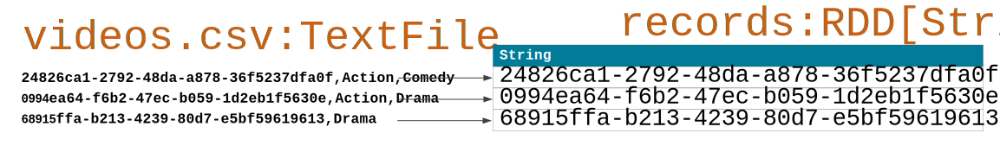
Step 1 loads video records from a CSV file in the local file system. The textFile method is called on the sc object that is a predefined SparkContext available in Spark shell. SparkContext serves as an entry point to Spark functionality. The resulting records object is an RDD or Resilient Distributed Dataset. For now, lets think of records as a dataset representation in Spark.
As you can see from the illustration, each line in the CSV file becomes an element of type String in the RDD.
Step 2: Parsing Records
Splitting video records into words and dropping video identifiers
val words = records.flatMap(record => record.split(",").drop(1))
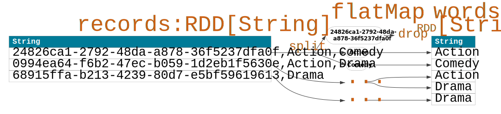
To parse the video records, we next apply transformation flatMap on the records RDD to obtain the words RDD. flatMap takes an anonymous function as a parameter. The body of this function is applied to each element of the input RDD records. In particular, each record is split based on the comma delimiter into multiple literals and the first literal representing a video identifier is dropped. All the remaining literals representing video genres become elements in the words RDD.
You may notice that flatMap is a one-to-many mapping, such that one element from the input RDD can result in many elements in the output RDD. flatMap is only one of many transformations defined for Spark RDDs. We will see examples of two other transformations in the next slide.
Step 3: Counting Words
Counting video genres
val counts = words.map(word => (word,1)).reduceByKey{case (x,y) => x + y}
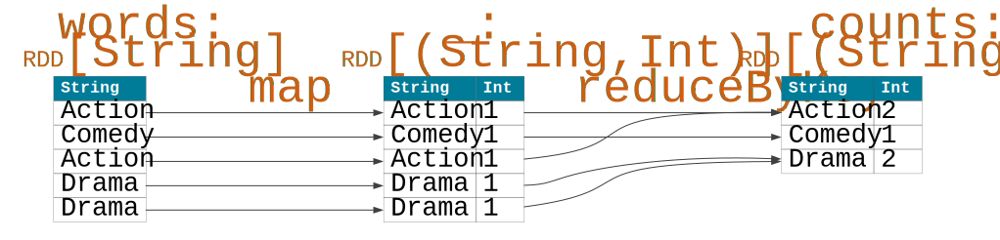
Counting is implemented using two transformations. First, we map each word or genre to a pair consisting of a key and a value. In our example, a key is represented by a genre from the words RDD and value is always hard-coded as 1. The intermediate RDD resulting from the map transformation contains key-value pairs and therefore, frequently called a Key-Value Pair RDD. The second transformation, reduceByKey, is applied on the intermediate RDD to aggregate values of pairs with the same key. In this example, the aggregation function is simply defined as addition of two numeric values.
The illustration shows the effects of these two transformations.
Note that, unlike flatMap, it is easy to see from the illustration that map allows for a one-to-one mapping.
Step 4: Outputing The Result
Collecting and printing the result
counts.collect().foreach(println)
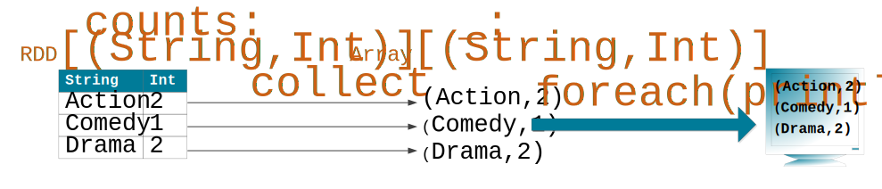
In this last step, we are collecting and printing the result of our computation. We apply collect on the counts RDD to transfer all data from the distributed dataset represented by this RDD to a Scala Array on the client machine. Unlike transformations that take an RDD as input and return an RDD as output, collect is an action; it triggers computation of the final result and makes it available to the client program.
The output array is then processed using regular Scala Array API to print each element to the screen.
Final Solution
Taking advantage of the Scala fluent interface
sc.textFile("file:///home/videos.csv")
.flatMap(line => line.split(",").drop(1))
.map(word => (word,1))
.reduceByKey{case (x,y) => x + y}
.collect()
.foreach(println)Finally, we can take advantage of a couple of Scala syntactic features to make our code more compact and sometimes more readable.
The fluent interface is one such syntactic optimization. Here we have the same four steps of the WordCount problem implemented as one statement with method chaining. The result of this computation will be the same as before.
Taking advantage of the Scala unnamed parameters
sc.textFile("file:///home/videos.csv")
.flatMap(_.split(",").drop(1))
.map((_,1))
.reduceByKey(_+_)
.collect
.foreach(println)In addition, if you are familiar with unnamed parameters in Scala represented by underscores, our code can be further simplified as shown in this slide. Again, the result of this computation will be the same as before.
What is an RDD?
Programming abstraction of a dataset for Spark in-memory computation
| Property | Description |
|---|---|
Dataset |
Dataset contains primitive values, records, tuples, class objects |
Distributed |
Data may reside on different nodes in a cluster |
Resilient |
Data is recomputed based on lineage in case of a failure |
Immutable |
Dataset is transformed into a new dataset rather than mutated |
In-memory |
Data is kept in memory as much as possible |
Resilient Distributed Dataset or RDD is a programming abstraction of a dataset for Spark in-memory computation. RDD has a number of properties that we will discuss in more detail in the following slides.
RDD as a Dataset
- Collection of data objects
- Object types can affect operations
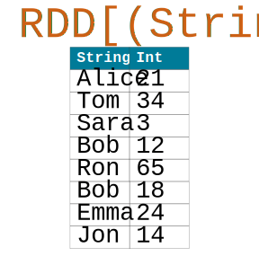
First, think of RDD as a dataset or a collection of data objects of a known type. Types of objects can affect operations that are applicable to a particular RDD. For example, the RDD in the illustration holds key-value pairs, where keys correspond to people names and values correspond to people ages, such as Alice is 21 y.o. Key-Value Pair RDDs constitute a special class of RDDs with many useful and unique operations.
It is important to understand that until computation is triggered by an action, an RDD does not hold any data; it is instead just a recipe of how data objects can be computed.
RDD as a Distributed Dataset
- RDD is divided into partitions
- Partitions are distributed across nodes in a cluster

Second, Spark automatically partitions an RDD into smaller collections called partitions and distributes them among Executors on different nodes in a cluster.
In our example, we have four partitions distributed across the three nodes.
How partitioning is performed may depend on many factors, including a data source, such as Cassandra or HDFS, number of cores available to an application, and types of operations applied to an RDD. An application will frequently have to control partitioning to achieve optimal performance.
RDD as a Resilient Distributed Dataset
- Spark remembers lineage of all data it computes to achieve fault-tolerance
- Spark automatically recomputes partitions that were lost due to a failure

Third, RDD is resilient or fault-tolerant because Spark remembers lineage or pedigree of all data it computes. In case of a node or process failure, lost partitions are recomputed automatically.
This process is illustrated in our example, where the node with two partitions failed and Spark recomputed those partitions on the two other nodes. Reliability of an external data source is important for result reproducibility. Spark should be able to retrieve data again if need be!
RDD is Immutable
- RDD is read-only
- RDD can be transformed
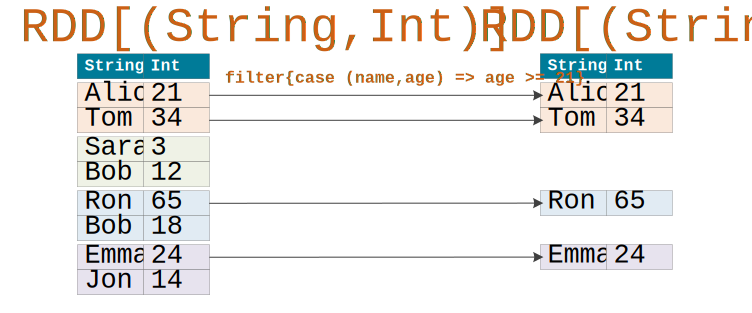
Next, the RDD property that is frequently overlooked is immutability.
It is helpful to think about RDD data as read-only. To change data, we must transform an RDD into a new RDD.
In this example, we are applying the filer transformation on the input RDD to produce the output RDD with key-value pairs where value (person’s age) is greater or equal to 21.
RDD is for In-Memory Computation
- RDD partitions are processed in memory
- RDD (as a whole) does not have to fit into memory
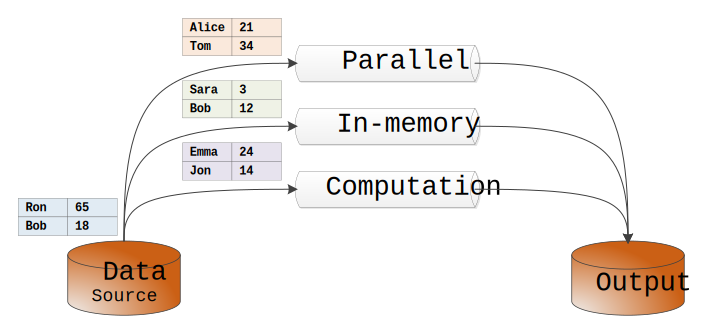
Finally, Spark is about parallel, in-memory computation. Partitions do have to be in memory to be processed, however an RDD as a whole does not need to be in memory at one given moment.
Conceptually, imagine that computation is organized into multiple pipelines with a known throughput, such that each pipeline can handle some number of partitions at a time. The data that is waiting for its turn to get into a pipeline is simply sitting at the data source. Once a pipeline is cleared and its output is to an external system, it is capable to serve more partitions. The more cluster resources are allocated to your application, the more pipelines and parallelism you can have.
It should be noted that some operations on RDDs, such as those that involve data shuffling, require disk I/O. In addition, an application will frequently have to control how an RDD is cached or persisted to achieve optimal performance.
How Do You Create an RDD?
A few prerequisites
| Prerequisite | Description |
|---|---|
SparkContext |
A SparkContext represents a connection to a Spark cluster. In Spark shell, object sc is created automatically. In a standalone application, a SparkContext must be constructed. |
Spark-Cassandra Connector |
A library that allows moving data between Spark and Cassandra. DataStax Enterprise comes with Spark and Cassandra integrated. |
Data source |
Data is initially loaded into Spark from an external source. |
Before we can create a Spark RDD, we need to discuss some prerequisites.
First, we need to have a SparkContext object that represents a connection to a Spark cluster and serves as an entry point to Spark functionality. In this presentation, we assume that such object is predefined and denoted as sc, which is exactly the case how it is defined in Spark shell.
Second, if we want to interact with Cassandra, we need a special library called Spark-Cassandra Connector. This library is already part of DataStax Enterprise (DSE) and therefore, we can just start using its functions.
Finally, remember that Spark is not a storage system or a database like Cassandra; any data has to be loaded from an external system. Depending on an initial data source for our RDDs, we will discuss different approaches to creating an RDD.
Three main approaches
- Parallelize an existing collection
- Load data from a stable storage
- Transform an existing RDD
In particular, we will discuss how to parallelize an existing Scala collection, such as a list, array, or sequence; how to load data from a stable storage, such as a file or the Cassandra database; and how to create an RDD from an existing RDD using transformations, such as filter or map.
Creating an RDD from an Existing Collection
Parallelizing a Scala List
val lst = List( ("Frozen", 2013), ("Toy Story", 1995), ("WALL-E", 2008) )
// lst: List[(String, Int)]
val rdd = sc.parallelize(lst)
// rdd: org.apache.spark.rdd.RDD[(String, Int)]|
This approach is used with small datasets for development, testing, and educational purposes. |
To create an RDD from a Scala collection, we first define a local collection, such as the list of movies in this example. Each movie is represented by a Scala tuple with a movie title and a movie year. Notice the type of value lst is; it is List[(String, Int)].
Then, we simply pass this list to method parallelize, which returns a Spark RDD as you can see in the example. Again, notice the type of value rdd; it is now RDD[(String, Int)].
This is how simple to create an RDD from a collection you can define in your client program. parallelize is quite useful for quick development and testing things out, and is perfect for educational examples. You are unlikely to use it in production however, as large datasets are most likely to be loaded from Cassandra or a distributed file system.
Creating an RDD from a File
Local file system
val rdd = sc.textFile("file:///home/videos.csv")
// rdd: org.apache.spark.rdd.RDD[String]Distributed file system
val rdd = sc.textFile("cfs:///home/videos.csv")
// rdd: org.apache.spark.rdd.RDD[String]|
SparkContext supports hadoopFile, newAPIHadoopFile, sequenceFile, and objectFile for other types of files. |
Creating an RDD from a text file is achieved by calling the textFile method on the SparkContext object.
In the first example, we are supplying the file location in a local file system. This file must exist on every worker node in a cluster.
In the second example, we are passing the file location in Cassandra File System, which is HDFS-compatible file system.
In both cases, the resulting RDD contains elements of type String, because each element corresponds to exactly one line in the file.
There are a few additional methods (listed in the slide) that allow creating RDDs from files of other formats.
Creating an RDD from a Cassandra Table
Reading from a Cassandra table
val rdd = sc.cassandraTable("killr_video", "videos")
// rdd: com.datastax.spark.connector.rdd.CassandraTableScanRDD[com.datastax.spark.connector.CassandraRow]|
Spark-Cassandra Connector supports many other functions to customize and control data retrieval from a Cassandra table, including select, where, limit, withAscOrder, and withDescOrder. |
It is also very straightforward to create an RDD from a Cassandra table by calling method cassandraTable supplied by Spark-Cassandra Connector.
In this example, we are loading all data from table videos that is defined in keyspace killr_video. You should notice that the returned RDD type is coming from the connector package and is defined as an RDD of Cassandra rows with the structure that matches the underlying Cassandra table rows.
The connector supports additional methods to select specific table columns, retrieve only rows satisfying a certain predicate, or limit a number of rows in a resulting RDD. While we will not discuss these methods here, it is worth mentioning that, internally, data for a Cassandra RDD will be retrieved with an efficient CQL query.
Creating an RDD from an Existing RDD
Transforming an RDD into another RDD
val rdd1 = sc.parallelize(List( ("Frozen", 2013), ("Toy Story", 1995), ("WALL-E", 2008) ) )
// rdd1: org.apache.spark.rdd.RDD[(String, Int)]
val rdd2 = rdd1.filter{ case (title,year) => year > 2010 }
// rdd2: org.apache.spark.rdd.RDD[(String, Int)]|
The Spark RDD API supports many useful transformations, including filter, map, flatMap, union, and intersection. |
The last but not least, an RDD is frequently created from another RDD using a transformation. Transformations are used frequently because they actually do some useful processing of data.
Here, given rdd1 created by parallelizing a collection, we are applying the filter transformation to obtain rdd2. The filter's parameter is the anonymous function that is applied on every element of rdd1; the result of this function is either true (the element passes the filtering condition and will appear in rdd2) or false (the element is eliminated).
As you may have already computed, rdd2 will only contain information for movie "Frozen".
There is More to It than That …
Two related topics
- Lazy evaluation
- Partitioning
Finally, lets briefly introduce two internal topics that we will talk about elsewhere in a greater detail.
All the discussed methods, such as parallelize, textFile, cassandraTable, and filter, are evaluated lazily by Spark. That means that, in all our examples, Spark only records metadata about how an RDD can be created but does not access actual data until later time. Such time has to be defined by an action, which belongs to a special class of operations.
It is also worth mentioning that, for presented approaches, a number of resulting RDD partitions may be different depending on a data source used. One can also control a number of partitions by passing a second, optional parameter to parallelize, textFile, and some of the RDD transformations (but not filter). Partitioning of a Cassandra RDD will depend on a data size, as well as Cassandra partitioning to benefit from data locality. Partitioning is very important for computation parallelism.
What are RDD Transformations?
Two types of RDD operations
Transformations
- Transform an RDD to a new RDD
- Lazy evaluation
Actions
- Perform computation on an RDD and output results to a client or store results to a stable storage
- Trigger computation
Spark defines two types of operations on RDDs - transformations and actions.
A transformation always takes an RDD as input and returns an RDD as output. In other words, a transformation creates a new RDD from an existing RDD. All transformations in Spark are evaluated lazily, such that they do not compute their results immediately but rather record metadata about how to compute their results.
On the other hand, an action triggers computation: it takes an RDD and computes the final result, which is either transferred to the client driver application or stored into an external system like Cassandra.
This presentation focuses on common transformations.
Common Transformations
Unary transformations
| Transformation | Description |
|---|---|
filter(f) |
A new RDD is formed by selecting those elements of the source RDD on which a function f returns true. |
map(f) |
A new RDD is formed by applying a function f on each element of the source RDD. There is a one-to-one correspondence between input and output elements. |
flatMap(f) |
A new RDD is formed by applying a function f on each element of the source RDD. There is a one-to-many correspondence between input and output elements if f returns a Seq with more than one element. |
distinct() |
A new RDD is formed by distinct elements of the source RDD. |
sample(withReplacement, fraction, [seed]) |
A new RDD is formed by a fraction of elements of the source RDD using sampling with or without replacement. A random number generator seed is optional. |
Here are a few common unary transformations, which can be applied on a single, source RDD.
filter takes a function f as a parameter and returns a new RDD that is formed by selecting those elements of the source RDD on which f returns true.
In the case of both map and flatMap, a function f is applied on every element of the source RDD and the function return value becomes an element in a new RDD. The key difference between these two transformations is that flatMap further flattens or unnests any collection returned by function f, such that every element in the collection becomes a separate element in the new RDD.
distinct returnes an RDD that contains all distinct elements of the source RDD.
sample allows randomly selecting only a fraction of elements of the source RDD, which is useful for large dataset exploration.
Binary transformations
| Transformation | Description |
|---|---|
union(otherRDD) |
A new RDD contains the union of elements from the source RDD and otherRDD. Duplicates are allowed. Input RDDs must be union-compatible. |
intersection(otherRDD) |
A new RDD contains the intersection of elements from the source RDD and otherRDD. Duplicates are eliminated. Input RDDs must be union-compatible. |
subtract(otherRDD) |
A new RDD contains those elements from the source RDD that are not in otherRDD. Duplicates are allowed. Input RDDs must be union-compatible. |
cartesian(otherRDD) |
A new RDD contains all possible pairs of elements from the source RDD and otherRDD. RDD[T] x RDD[U] → RDD[(T,U)]. Duplicates are allowed. |
These four transformations are binary, so they take the source RDD and the other RDD as input and return a new RDD.
union, intersection, subtract, and cartesian work just like the corresponding mathematical operations of sets.
This is, of course, an incomplete list of transformations available in Spark. We will see many more transformations in other presentations, especially in the context of Key-Value Pair RDDs.
Transformation Examples
Demonstrating filter, map, flatMap, distinct, and cartesian
Starting with an RDD of movies
val movies = sc.parallelize( Array("Frozen, 2013", "Toy Story, 1995", "WALL-E, 2008", "Despicable Me, 2010", "Shrek, 2001", "The Lego Movie, 2014", "Alice in Wonderland, 2010") )
We are going to demonstrate some of the discussed transformations in the following examples. Let us start by creating the movies RDD with 7 elements, where each element is a string literal containing a movie title and a movie release year.
filter
Find movies from 2010
val movies2010 = movies.filter(m => m.substring(m.length-4,m.length).toInt == 2010)
// alternatively, the same result can be computed with this statement
val movies2010 = movies.filter(m => m.split(",").last.trim.toInt == 2010)
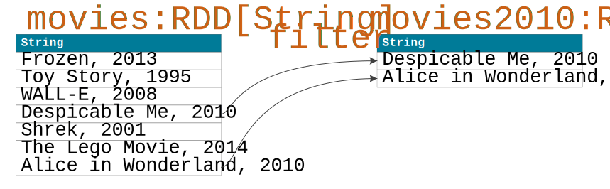
Our first challenge is to find movies from 2010.
Here we are using the filter transformation to select only those movies whose release years are equal to 2010. A minor difficulty is that we first need to extract a year from a string literal. There are a couple of alternatives shown. First, we can use method substring to extract the last 4 characters in a literal and convert the result to an integer. Second, we can use method split to decompose a literal based on the comma delimiter, take the last component, trim leading spaces, and convert the result to Int. In both cases, the result is exactly the same - two movies are selected for the new RDD.
map
Add a set of genres to each movie
val familyMovies = movies2010.map(m => (m, Set("Family","Animation")))
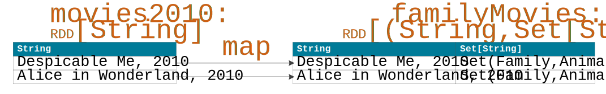
Next, we are going to add a predefined set of genres ("Family" and "Animation") to each movie from 2010.
map takes each input RDD element of type String and returns a tuple with two components of type String and Set for the new familyMovies RDD. This is a one-to-one mapping.
flatMap and distinct
Extract distinct genres
val familyGenres = familyMovies.flatMap{case (m,g) => g }
.distinct
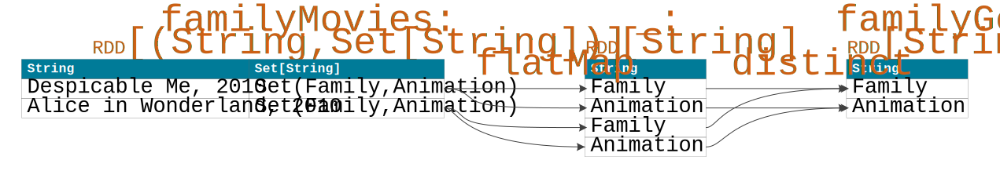
This time, we want to extract distinct genres from the previous RDD.
Because the genres are stored in the Set collection, we are using flatMap to get down to individual elements in a set and map them to elements of the intermediate RDD. This is a one-to-many mapping. We are then eliminating duplicates with the distinct transformation that gives us RDD familyGenres.
cartesian and filter
Compute all possible pairs of non-repeating genres
val pairs = familyGenres.cartesian(familyGenres)
.filter{case (g1,g2) => g1 != g2}
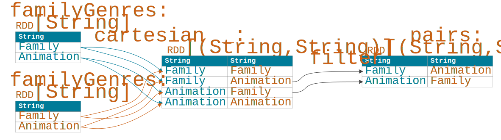
In our final example, we are computing all possible pairs of non-repeating genres using transformations cartesian and filter.
Computing a Cartesian product can produce a large result, yet it is a useful transformation in real life applications. For example, to find similar items in a set, you may have to compare every item with every other item in this set. This is where cartesian helps you generate all possible item pairs to do the comparison.
Our filter transformation eliminates pairs where both genres are the same.
Go ahead and try other transformations we discussed!
What are RDD Actions?
Two types of RDD operations
Transformations
- Transform an RDD to a new RDD
- Lazy evaluation
Actions
- Perform computation on an RDD and output results to a client or store results to a stable storage
- Trigger computation
Spark defines two types of operations on RDDs - transformations and actions.
A transformation always takes an RDD as input and returns an RDD as output. In other words, a transformation creates a new RDD from an existing RDD. All transformations in Spark are evaluated lazily, such that they do not compute their results immediately but rather record metadata about how to compute their results.
On the other hand, an action triggers computation: it takes an RDD and computes the final result, which is either transferred to the client driver application or stored into an external system like Cassandra.
This presentation focuses on common actions.
Common Actions
Actions that return results to the driver program
| Action | Description |
|---|---|
collect() |
Returns an Array with all elements of the source RDD. |
count() |
Returns a total number of elements in the source RDD. |
reduce(f) |
Returns an aggregate value computed by applying function f to elements of the source RDD. Function f must take two arguments and return one value, and should be commutative and associative for correct parallel computation. |
take(n) |
Returns an Array with the first n elements of the source RDD. |
first() |
Returns the first element of the source RDD. |
Here are some frequently used actions that are evaluated in parallel on the source RDD and whose results are returned to the driver program.
collect simply returns all elements of the source RDD as an Array.
count counts how many elements are in the source RDD and returns that value.
reduce uses a function f to compute a single aggregate value from all elements of the source RDD.
take returns an Array with the first n elements of the source RDD.
first only returns the first element of the source RDD.
Actions with side effects
| Action | Description |
|---|---|
foreach(f) |
Executes a function f on each element of the source RDD. The function usually implements a side effect, such as updating an accumulator variable or interacting with an external system. |
saveAsTextFile(path) |
Saves all elements of the source RDD into a text file. Spark calls toString on each element to convert it to a line of text in the file. |
saveToCassandra(keyspace, table, [columns]) |
Stores all elements of the source RDD into a Cassandra table in a given keyspace. Table columns may be specified if needed. saveToCassandra is available through Spark-Cassandra Connector. |
Some actions do not return their results to the driver program but are rather used for side effects.
foreach takes function f as a parameter and executes it on every element of the source RDD. The function usually pushes data to an external system, updates accumulator variables, or performs other side effects.
saveAsTextFile can be used to save all elements of the source RDD into a text file.
And, finally, saveToCassandra allows saving all elements of the source RDD into a Cassandra table. saveToCassandra is one of the actions supported by Spark-Cassandra Connector, which we will discuss in another presentation.
Action Examples
Demonstrating collect, count, reduce, and foreach
Starting with an RDD of movies
val movies = sc.parallelize( Array("Frozen, 2013", "Toy Story, 1995", "WALL-E, 2008", "Despicable Me, 2010", "Shrek, 2001", "The Lego Movie, 2014", "Alice in Wonderland, 2010") )
We are going to demonstrate some of the discussed actions in the following examples. Let us start by creating the movies RDD with 7 elements, where each element is a string literal containing a movie title and a movie release year.
collect
Output movies from 2010
movies.filter(m => m.substring(m.length-4,m.length).toInt == 2010)
.collect
.foreach(println)Output
Despicable Me, 2010
Alice in Wonderland, 2010Our first example prints movies from 2010 to a console on the client side.
Here we are using the filter transformation to select only those movies whose release years are equal to 2010. We are then returning the result to the client as an Array with collect. We finally iterate over the array elements and print each one of them locally.
collect should be used with caution when working with large datasets. You do not want to transfer huge amounts of data to the client application from your Spark cluster. Instead, you want to apply transformations like filter to decrease your data size before collecting the result.
count
Output the total number of movies in the dataset
val totalCount = movies.count
println(totalCount)Output
7Next, we are going to count how many movies we have in the original RDD.
This is straightforward to do using action count. Counting is done in parallel by Spark and the final result is returned to the driver program and stored in local variable totalCount. We output value 7 with println.
reduce
Output a sum of all movie title lengths
val totalLength = movies.map(m => m.substring(0, m.length - 6).length)
.reduce{case (x,y) => x + y}
println(totalLength)Output
72This time, we want to add up all movie title lengths just for demostration purposes.
We are applying the map transformation to extract movie titles and compute a number of characters in each one. We are then using the reduce action that adds any two length values together and does it for all RDD elements and intermediate results in parallel. The final result is returned to the driver program, stored into the local variable, and printed.
Instead of using reduce, we could have used action sum to achieve the same result. Look it up!
foreach
Output an average of all movie title lengths
val totalCount = sc.accumulator(0)
val totalLength = sc.accumulator(0)
movies.map(m => m.substring(0,m.length - 6).length)
.foreach{ l => totalCount += 1; totalLength += l }
println(totalLength.value / totalCount.value)
println(totalLength.value.toDouble / totalCount.value)Output
10
10.285714285714286Our last example of computing an average movie title length is a bit more involved.
Notice that, to compute the average, we can use totalCount and totalLength from the previous two examples. Divide 72 by 7 locally and we are done! However, that would require us using two actions (count and reduce) and therefore, we will have to do, so to speak, two passes over our dataset of movies.
We can do better than that with accumulators!
First, we are declaring two accumulator variables, totalCount and totalLength, with initial values that are equal to zero. Accumulators are special variables in Spark that can be added to in parallel but their final aggregate values can only be read locally by the driver program.
Second, we are applying the map transformation to get individual title lengths.
Third, we are using the foreach action to update our accumulators. For each RDD element, we are adding one to totalCount and the element value to totalLength.
Last, we are accessing accumulator values locally in the driver program, calculating the average and printing the result.
On a final note, instead of using foreach and accumulator variables, we could have used action mean for this example. Try it out!